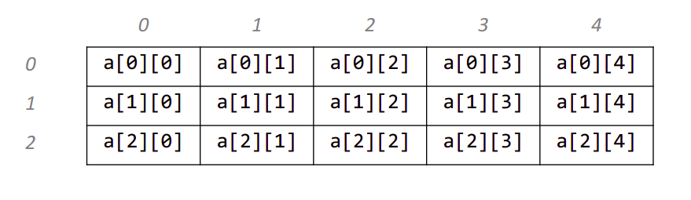

Multidimensional Arrays
Introduction to multidimensional arrays
A multidimensional array is an array with more than one dimension. In a
multidimensional array, each element is another array with a smaller
number of dimensions.
Properties of multidimensional arrays
-
Just like single-dimensional arrays, the elements of a 2d array are
also stored in contiguous memory locations, where each element of the
array occupies a fixed memory size (for integers it is 4).
- An example of a 2D array of size 3 * 5:-

Accessing array elements
-
The elements of the array are accessed by using their index. The row
index of a 2D array of size N * M ranges from 0 to N - 1. Similarly,
the column index ranges from 0 to M - 1. For example: Accessing
element at row index 5 and column index 7: Array[5][7] -> this is the
element at the 6th row and 8th column in the array.
-
Every array is identified by its base address i.e the location of the
first element of the first row of the array in memory. So, basically,
the base address helps in identifying the address of all the elements
of the array.
-
Since the elements of an array are stored in contiguous memory
locations, the address of any element can be accessed from the base
address itself. For example, 200 is the base address of the entire
array. If the number of columns in the array is equal to 10 then the
address of the element stored at the index Array[5][7] is equal to 200
+ (5*10 + 7) * (size of(int)) = 428
Applications of Multidimensional arrays
-
Multidimensional arrays are used to store the data in a tabular form.
For example, storing the roll number and marks of a student can be
easily done using multidimensional arrays. Another common usage is to
store the images in 3D arrays.
-
In dynamic programming questions, multidimensional arrays are used
which are used to represent the states of the problem.
-
Apart from these, they also have applications in many standard
algorithmic problems like:
- Matrix Multiplication
- Adjacency matrix representation in graphs
- Grid search problems
Time Complexity of various operations
-
Accessing elements: Since elements in an array are stored at
contiguous memory locations, they can be accessed very efficiently
(random access) in O(1) time using indices.
-
Finding elements: Finding an element in an array takes O(N * M
) time in the worst case, where N is the number of rows of the array
and M is the number of columns of the array, as you may need to
traverse the entire array.